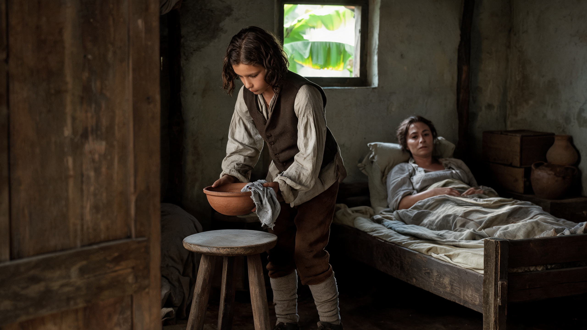
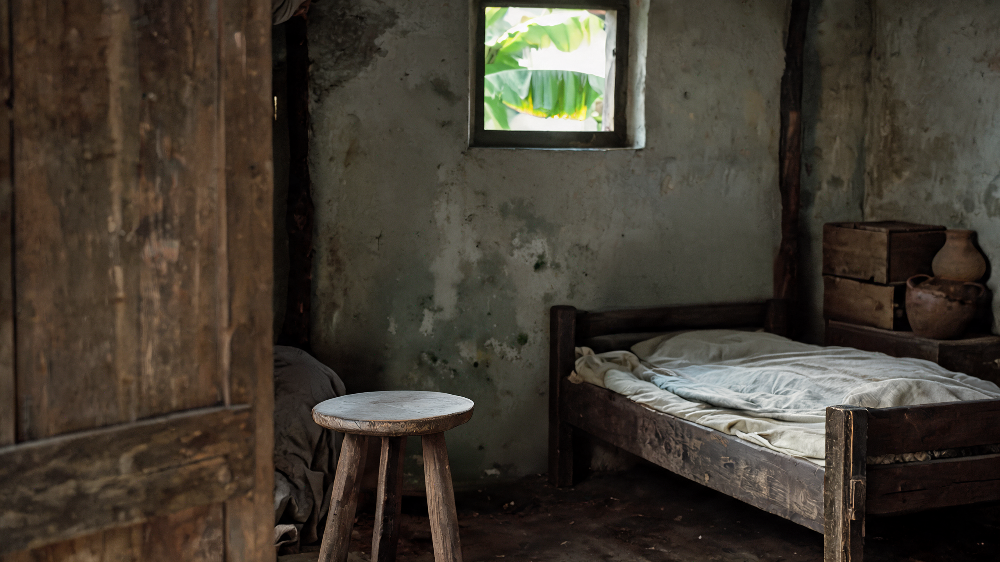
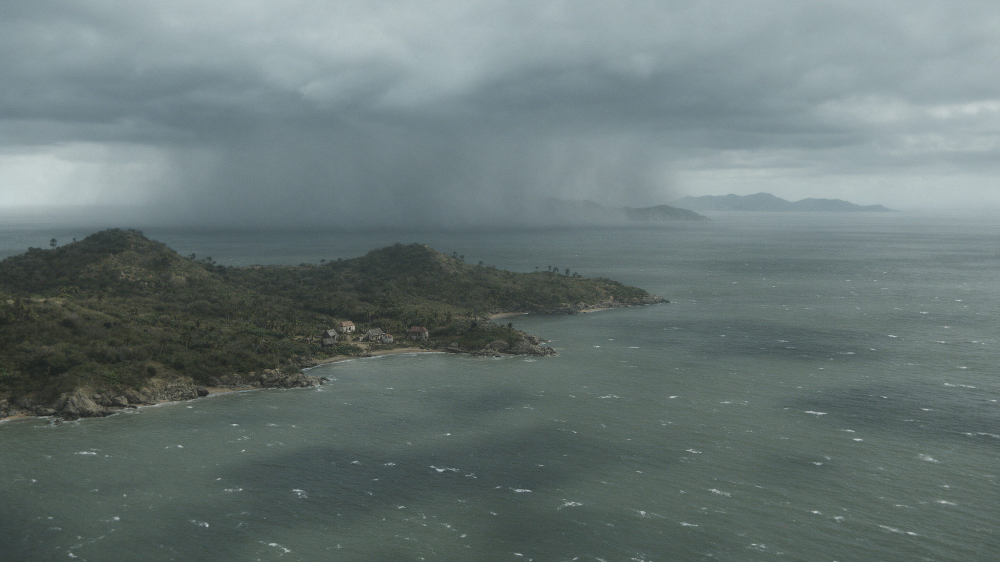
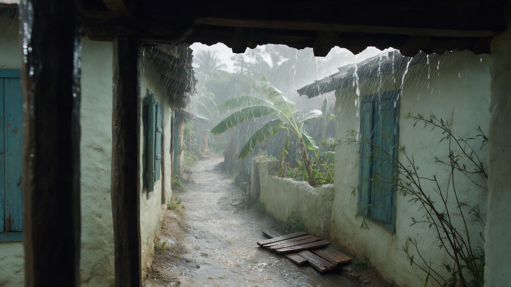

HAMILTON / TWO-SOURCE EXPERIMENT / v7
离岛以前
让模型在段落内完成切镜
一条30秒人物主线，一条20秒环境片。保留全部13个场景，最后交叉排成约50秒的开场CG。
A01 · 30秒 / 7镜B01 · 20秒 / 6镜720p · 16:9 · 无声首次视频预算 ¥75.60v6保留 · 本版待审阅这次测试的是多镜头叙事能力。每条视频接收多张参考图，由模型执行内部切镜。时间、场景、人物身份与动作都写进提示词；生成后再核实实际落点。
无人段使用已补制的N02参考图，目标输出保持无人、空凳。所有源视频关闭声音，画面上的说明不会进入CG。
01 / REVIEW THE STRUCTURE
先看两条素材怎样组成一段故事
这是按计划时长切换参考图的静态预演，没有视频运动或声音。可分别查看A、B两条源片，或它们交叉排列后的顺序。无人段也展示已补制的真实参考图；全部图片均与后端上传列表对应。

A01 / 30 SECONDS
人物叙事 · 7镜30秒
7张参考图 · 720p · 16:9 · 关闭声音 · 首次生成预计¥45.36
| 源片时间 | 场景 | 参考 | 动作与叙事 |
|---|---|---|---|
| 00–03s | 照料 | @图片1 | 孩子把碗放到仍在床上的母亲身边。 |
| 03–05s | 无人空窗与空凳 | @图片2 | 另一时刻，房间已无人；空窗和空凳只停留2秒。 |
| 05–09s | 商行劳动 | @图片3 | 多年后，少年在漏雨商行护住账册。 |
| 09–13s | 抵住风压 | @图片4 | 少年用手和身体承受一次窗板的风压。 |
| 13–17s | 收笔 | @图片5 | 风灾之后，纸上已有文字；少年收笔并停看。 |
| 17–23s | 读者资助 | @图片6 | 读者先阅读，再把钱袋推向旅行袋。 |
| 23–30s | 登船与空梯 | @图片7 | 少年上船离开，摄影机留在岸边看空梯。 |
本场景的人物、空间与道具参考。

新补制的无人房间；木凳上没有碗和布。

本场景的人物、空间与道具参考。

本场景的人物、空间与道具参考。

本场景的人物、空间与道具参考。

本场景的人物、空间与道具参考。

本场景的人物、空间与道具参考。
完整提示词 · 与API读取的TXT一致
打开TXTB01 / 20 SECONDS
风暴与灾后 · 6镜20秒
6张参考图 · 720p · 16:9 · 关闭声音 · 首次生成预计¥30.24
| 源片时间 | 场景 | 参考 | 动作与叙事 |
|---|---|---|---|
| 00–04s | 远海群岛与雨墙 | @图片1 | 远海尺度：岛很低，雨墙覆盖很大。 |
| 04–07s | 海湾里的居民点 | @图片2 | 从大范围岛屿切近到海湾，说明那里有人生活。 |
| 07–11s | 门廊下的雨街 | @图片3 | 地面尺度：摄影机躲在屋檐下，看雨横过街巷。 |
| 11–14s | 石岸与缆绳 | @图片4 | 港口尺度：一股浪水冲上湿石岸，又退回去。 |
| 14–17s | 灾后街巷 | @图片5 | 时间跳到雨后：破损不均的房屋、积水和远处清理者。 |
| 17–20s | 倒伏甘蔗与泥水 | @图片6 | 灾后延伸到生计：沟水流过，作物倒伏在地。 |

本场景的人物、空间与道具参考。

本场景的人物、空间与道具参考。

本场景的人物、空间与道具参考。

本场景的人物、空间与道具参考。

本场景的人物、空间与道具参考。

本场景的人物、空间与道具参考。
完整提示词 · 与API读取的TXT一致
打开TXT04 / INTERLEAVE THE TWO SOURCES
两条素材交叉剪成约50秒
A01的“商行→抵窗”之间插入远海、海湾和雨街；“抵窗→收笔”之间插入码头、灾后街巷和甘蔗。这样风灾仍发生在少年阶段，书写仍在灾后。
| 成片时间 | 源视频 / 取用时间 | 画面 | 叙事 |
|---|---|---|---|
| 00:00–00:03 | A01 / 0–3s | 照料 | 孩子把碗放到仍在床上的母亲身边。 |
| 00:03–00:05 | A01 / 3–5s | 无人空窗与空凳 | 另一时刻，房间已无人；空窗和空凳只停留2秒。 |
| 00:05–00:09 | A01 / 5–9s | 商行劳动 | 多年后，少年在漏雨商行护住账册。 |
| 00:09–00:13 | B01 / 0–4s | 远海群岛与雨墙 | 远海尺度：岛很低，雨墙覆盖很大。 |
| 00:13–00:16 | B01 / 4–7s | 海湾里的居民点 | 从大范围岛屿切近到海湾，说明那里有人生活。 |
| 00:16–00:20 | B01 / 7–11s | 门廊下的雨街 | 地面尺度：摄影机躲在屋檐下，看雨横过街巷。 |
| 00:20–00:24 | A01 / 9–13s | 抵住风压 | 少年用手和身体承受一次窗板的风压。 |
| 00:24–00:27 | B01 / 11–14s | 石岸与缆绳 | 港口尺度：一股浪水冲上湿石岸，又退回去。 |
| 00:27–00:30 | B01 / 14–17s | 灾后街巷 | 时间跳到雨后：破损不均的房屋、积水和远处清理者。 |
| 00:30–00:33 | B01 / 17–20s | 倒伏甘蔗与泥水 | 灾后延伸到生计：沟水流过，作物倒伏在地。 |
| 00:33–00:37 | A01 / 13–17s | 收笔 | 风灾之后，纸上已有文字；少年收笔并停看。 |
| 00:37–00:43 | A01 / 17–23s | 读者资助 | 读者先阅读，再把钱袋推向旅行袋。 |
| 00:43–00:50 | A01 / 23–30s | 登船与空梯 | 少年上船离开，摄影机留在岸边看空梯。 |
这是理想取用区间。模型的切镜时间若有偏差，先定位真正切点再剪，不按整数秒机械切断动作。最后0.5秒淡黑放在剪辑端，生成片段自身不带黑场。
05 / WHAT WE WILL CHECK
看能力是否达标，再决定下一步
先看7个叙事场景和6个环境场景是否齐全，镜间是否为清楚的硬切，再看童年与少年、主角与读者是否混脸。无人段必须整段无人，读者必须先读再推袋，登船后必须留下约2秒空梯。
视频关闭声音。后期只有碗木接触、雨、风、浪、笔纸、布袋和脚步等环境声与拟音；27秒切灾后收掉风雨，33秒收笔只响一次，48秒人物离画后留下水声。没有配音、对白、字幕或配乐。